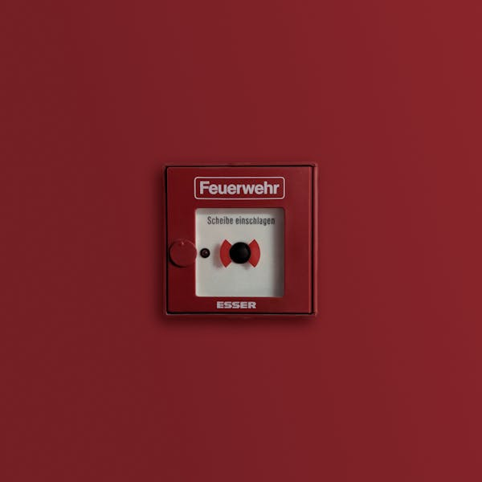
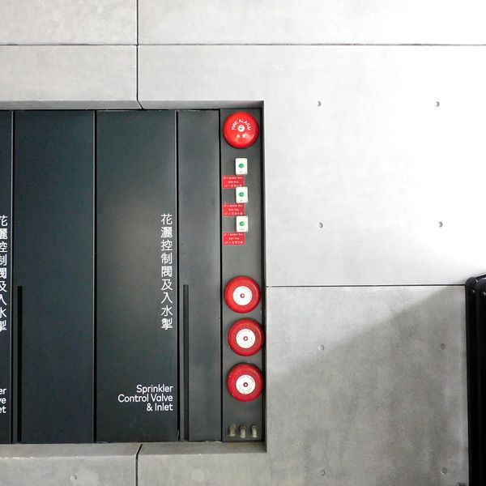
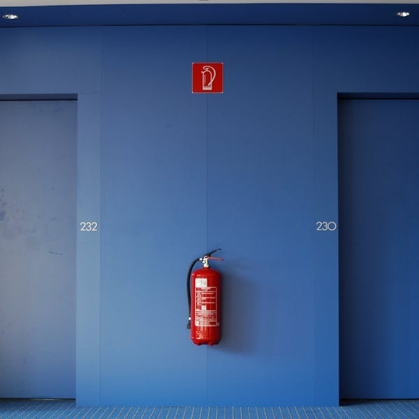
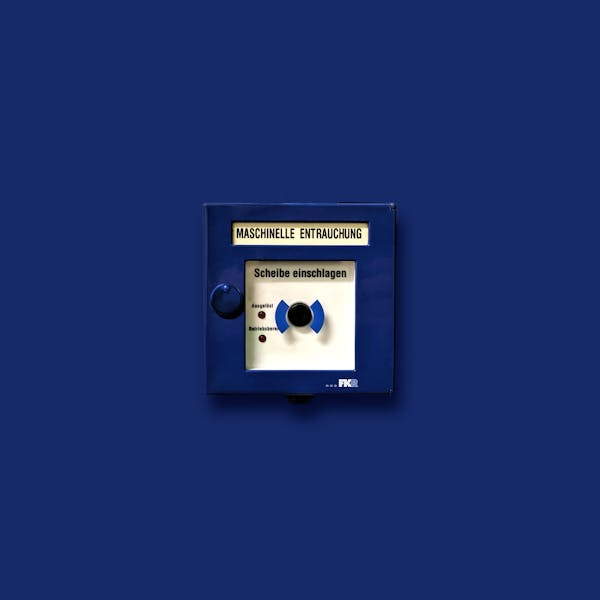
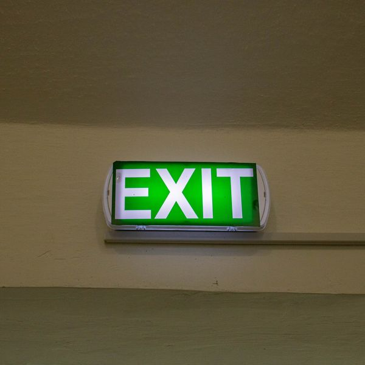
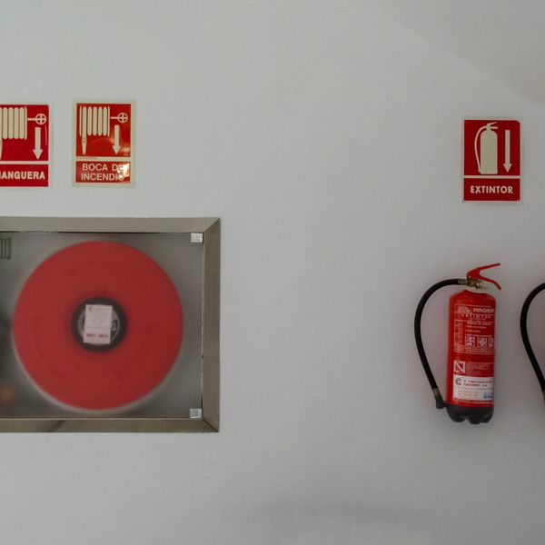

1. Work in pairs. Rank these five hotel-safety priorities from 1 (most important) to 5 (least important). Be ready to defend your ranking to another pair.
Rank (1–5)
Safety priority
Working smoke detectors in every guest room
Clearly marked emergency exits on every floor
Front-desk staff trained in first aid
Regular fire drills for all employees
CCTV cameras in the lobby and corridors
Useful start: “We put … first because if a fire starts at night, …”
VOCABULARY
2. Match the words with their pictures.
fire extinguisher
first-aid kit
assembly point
emergency exit
smoke detector
evacuation
fire alarm
defibrillator
A

it makes a loud noise when there is smoke in the room
B
the safe place outside where everyone gathers
C

a machine that can restart a person's heart
D

it is used to put out a small fire
E

a bell or siren that warns people about a fire
F

a special door for leaving the building quickly
G
the process of moving people out of a dangerous building
H

a box of bandages and medicines for minor injuries